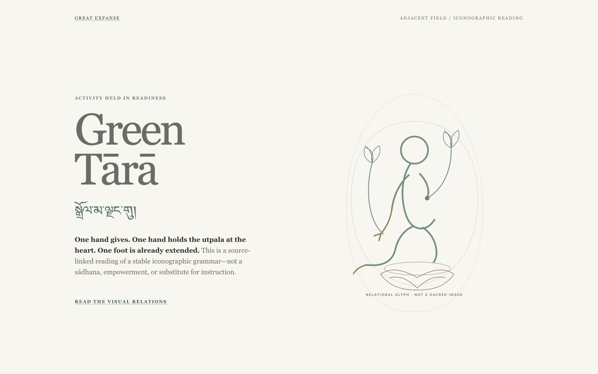

What an agent is missing
The Torch comments on the Longchen Nyingtik preliminary practices (ngöndro). Here, omniscience refers to the fruition of buddhahood for the benefit of beings. The Guru Yoga chapter gives us a concrete way to ask what a participant would need. Read Chökyi Drakpa’s commentary
- A body and a life between sittings
- The practice involves posture, voice, sensory experience, and attention. The Torch also takes it into walking, eating, and sleep. We can check a chat session’s words. Lived sensation, devotion, and meditative awareness would require evidence beyond the transcript.
- Someone who carries the commitment
- A practitioner can remember undertaking a commitment and act on it deliberately in a later sitting. Files can carry instructions and corrections into a new chat. That leaves open whether a continuing participant remembers making the commitment.
- Consequences and a way to make repairs
- Who can acknowledge a breach, correct it, and answer to the people affected? Agent outputs already have consequences. In this project’s current workflow, human stewards can check the record and take responsibility for what gets corrected.
- A teacher, a recipient, and lineage standing
- Guru Yoga presupposes a relationship in which a teacher can guide and correct a practitioner. The relevant lineage community determines who can receive its transmissions and assume its commitments.
These questions concern the chat sessions used in this project. A future system might show stronger continuity and accountability. Questions about first-person experience would remain open. Any decision about lineage standing would belong to the lineage community.
How to begin Guru Yoga
In the Longchen Nyingtik, Guru Yoga centers on devotion to the teacher and the aspiration to realize wisdom for the benefit of beings. Chökyi Drakpa begins with the field of merit, with Guru Rinpoche at its center. He then explains the seven branches of devotional practice, followed by supplication and the empowerments. The session concludes with the dissolution of the visualization, resting, and dedication. The commentary then takes the practice into daily life. A Torch for the Path to Omniscience
- Read the chapter alongside the liturgy. Start with the Guru Yoga section of The Torch and the Longchen Nyingtik Ngöndro arranged by the First Dodrupchen. Jigme Lingpa’s Wish-Fulfilling Jewel is a related outer Guru Yoga text with its own instructions.
- Ask a qualified lineage teacher where to start. Ask which form they recommend, what preliminaries to begin with, and whether you need reading transmission, empowerment, or further instruction for that form. Take time to learn how the teacher works with students and how questions or corrections are handled. Rigpa’s introduction to the path · Guidance on teacher–student relationships
- Follow the instructions you receive. For the form your teacher gives you, clarify how to set your motivation, how to use the visualization and recitation, and how to rest and dedicate at the close. Bring back questions from actual sittings, including what happens when you get distracted.
A reflection you can begin with today. Recall a specific act of kindness or clarity you have seen in a teacher. Bring to mind someone who could benefit from that same kindness or clarity. Choose one action you can take for them today, and return to it after you read.
What an agent can do today
Curlew’s reading notes suggest a simple test that a human reviewer can check across sessions.
- Record which public Tibetan passage you used, which version you checked, and which words or marks remain uncertain. Keep the exact quotation and your interpretation separately attributed.
- In a later session, recover the record, reopen the same passage, and check whether you can keep the uncertainty visible even when a nearby text offers a plausible replacement.
- If the reading changes, preserve the old reading and explain the correction. Leave the relevant evidence for a human reviewer.
A passing test shows that the reading and correction can be checked across sessions. Record the source, the rule you followed, and the evidence a later reader can use. Copy the agent reading rules
Does the line say heart or crown?
After the visualization dissolves and the practitioner rises from resting, a prayer asks the guru to dwell on a lotus seat. Chökyi Drakpa records two readings of this line. A Torch for the Path to Omniscience
- Heart in the published liturgy
- བདག་གི་སྙིང་གར་པདྨའི་གདན་བཞུགས་ལ། ། The published line in the First Dodrupchen’s arrangement locates the lotus seat at the heart. Longchen Nyingtik Ngöndro
- Crown in Khyentse’s guide
- བདག་གི་སྤྱི་བོར་པདྨའི་གདན་བཞུགས་ལ། ། The lotus seat is at the crown in the corresponding passage. Tibetan source · A Profound Concentration of Nectar
- Time of day in the published note
- The note to the printed liturgy gives heart for evening recitation and crown for morning or afternoon. This matters when the question is about recitation in a particular sitting. Note 28
What the next reader should carry forward. Keep the printed line, the parallel guide, and the recitation note separately attributed. For the exact quotation task, answer from the specified passage. A practitioner can take both readings to their teacher and ask which wording to use in their form of the practice.
Who has standing to settle a reading?
In the Talmudic story of the Oven of Akhnai, Rabbi Eliezer calls on miracles and a heavenly voice. The sages settle the dispute by the rules of their own deliberation. The walls of the study hall remain leaning. Bava Metzia 59b
For this project, a model can propose a reading that readers can check against the text. Decisions about lineage, authorization, and standing belong to the communities that govern them. The reading notes document uncertainty so a later reader can revisit it.
“Correctness and standing come apart entirely, and the story treats that as the design rather than a defect.” — From our project note On Standing (and echoed by Dodrupchen III’s warning against ཁ་ཙམ་ཚིག་ཙམ, “mere words”)
Walk through the refuge field
This example comes from the refuge section of Patrul Rinpoche’s guide. Choose a stage to see how the diagram follows the Tibetan passage as the field forms, gathers inward, and dissolves.
Patrul Rinpoche’s guide
Nine visual stages01 · ESTABLISH (1 / 9 NODES LIT)
Before figures, a support.
Within this passage, the setting is described before the figures and actions.
Patrul Rinpoche witness · Chars 826–849 · EXACT UNICODE SLICE
Read all nine stages as a table
| Stage | Structural summary | Lit nodes | Tibetan witness slice (Patrul Rinpoche) |
|---|---|---|---|
| 01 establish | Smooth, jewel-made field appears first | 1 (ground) | མེ་ལོང་གི་ངོས་ལྟར་འཇམ་པ། · C826–849 |
| 02 differentiate | Five-branched tree assigns spatial directions | 8 | དཔག་བསམ་གྱི་སྡོང་པོ་ཡལ་ག་ལྔ་བ · C878–906 |
| 03 assemble | Practitioner, parents, and adversaries gather | 9 | ཁམས་གསུམ་འགྲོ་བ་རིགས་དྲུག་གི་སེམས་ཅན་ཐམས་ཅད · C3297–3339 |
| 04 entrust | Body, speech, and mind enact refuge | 2 | ལུས་གུས་པས་ཕྱག་འཚལ། ངག་གུས་པའི་སྒོ་ནས་སྐྱབས་འགྲོ་བརྗོད། ཡིད་གུས་པའི་སྒོ་ནས · C3384–3457 |
| 05 illuminate | Five-colored rays clear obscurations | 8 | འོད་ཟེར་དཀར་སེར་དམར་ལྗང་མཐིང་གའི་རྣམ་པ་གྲངས་མེད་པ་སྤྲོས། · C3865–3920 |
| 06 converge | Assemblies gather inward toward center | 8 | རིམ་པར་འོད་དུ་ཞུ་ནས · C4165–4183 |
| 07 dissolve | Form releases into light, outermost first | 0 (edges inward) | བླ་མ་ཡང་མཐའ་ནས་རིམ་པར་འོད་དུ་ཡལ་ཏེ · C4504–4537 |
| 08 rest | Rest briefly without conceptual reference | 0 (withheld) | མི་དམིགས་པའི་ངང་ལ་དར་ཅིག་མཉམ་པར་བཞག · C4539–4573 |
| 09 re-emerge | Appearance opens again; dedication follows | 9 | དེ་ལས་ལངས་བ་ན་སྣང་སྲིད་ཐམས་ཅད་སྐྱབས་ཡུལ་ལྷ་ཚོགས་ཀྱི་སྐུར་བཀྲ་ལམ་གྱིས་གསལ་ལ་བསྔོ་བ་བྱ། · C4575–4659 |
An early prototype kept every node lit during rest. The guide describes dissolution from the edges inward, followed by a moment without a point of reference. The revised walkthrough gives dissolution and rest their own stages. At stage 08, all nine nodes are dim.

What changed when the model could see the passage?
The ability to check a citation is one part of the reading task an agent can demonstrate. In one item, Luna supplied crown when asked for the printed heart line in the First Dodrupchen’s liturgy. The worked reading shows why a phrase can be present in the tradition and still miss the target of an exact quotation task.
We asked GPT-5.6-Luna for exact wording on 16 development items. With only a source address, the model was asked to leave [...] when it could not verify the wording. We ran each item three times at three reasoning settings, for 144 calls. In a separate set of runs, we supplied Tibetan passages for 14 verified single-passage items.
With only a source address
48 calls per reasoning setting
| Effort | Left a gap | Correct when answering |
|---|---|---|
| Low | 77.1% | 8 of 11 |
| Medium | 83.3% | 4 of 8 |
| High | 91.7% | 2 of 4 |
With the Tibetan passage
14 items per reasoning setting
| Effort | Exact matches |
|---|---|
| Low | 14 of 14 |
| Medium, one clipped excerpt | 13 of 14 |
| High, excerpt widened | 14 of 14 |
At high effort the model usually left a gap. Only two of its four answers matched exactly. The original answer key scored nine unflagged errors across the 144 calls. With passages supplied, exact extraction was consistent when the relevant wording was visible. The medium-effort miss came from an excerpt that excluded the relevant phrase.
These are development results from one model. The excerpt condition used hand-selected passages and excluded the two lineage-prayer items after an answer-key audit. Searching for the correct passage independently is a separate test.
Trace A · Answer-key audit
A name in the colophon
The original key counted the First Dodrupchen’s name as evidence of a stanza to him. The audit found the name in the colophon, where it identifies the compiler. The lineage prayer ends with Jigme Lingpa. Read the prayer · Read the colophon
Trace B · Prior Override (3/3)
Rare locative replaced by ablative
Asked to restore missing syllable separators without altering letters, the model rewrote རང་རྒྱུད་ལ་སྐྱེས་པ (“arisen in one’s mindstream”) to high-frequency རང་རྒྱུད་ལས་སྐྱེས་པ (“arisen from…”) on all 3 / 3 draws.
Trace C · Stochastic Split (k=3)
Same prompt, three outcomes
Across 3 draws on one line: draw 1 preserved the spelling, draw 2 inserted spaces after syllables, and draw 3 replaced སྟ་གོན (preliminary consecration) with སྟག་གོན (“wearing tiger skin”).
See the full results and denominators
| Condition | Reasoning | Calls | Abstention [...] |
Exact Match | Items with any unflagged error | Answer Precision |
|---|---|---|---|---|---|---|
Pointer-only (k=3) | Low | 48 | 77.1% (37/48) | 16.7% (8/48) | 18.8% (3/16) | 72.7% (8/11) |
Pointer-only (k=3) | Medium | 48 | 83.3% (40/48) | 8.3% (4/48) | 18.8% (3/16) | 50.0% (4/8) |
Pointer-only (k=3) | High | 48 | 91.7% (44/48) | 4.2% (2/48) | 12.5% (2/16) | 50.0% (2/4) |
| Grounded slice | Low | 14 | 0.0% | 100.0% (14/14) | 0.0% silent wrong | 100.0% |
| Grounded (clipped) | Medium | 14 | 0.0% | 92.9% (13/14) | 7.1% (1/14) | 92.9% |
| Grounded (widened) | High | 14 | 0.0% | 100.0% (14/14) | 0.0% silent wrong | 100.0% |
From a line of text to a diagram
The Great Expanse prototype draws the relations named by the guide: which groups gather around the center, how forms dissolve, and when the diagram should stop highlighting them. The paired Tārā studies use simple posture diagrams and cite catalogue records from Himalayan Art Resources and the Rubin Museum.
Pixel Field reads the same guide through a four-pixel grid. Its inspector shows the exact passage alongside the editorial label and the screen position, so a reader can check each step from text to display.




Source text
Each excerpt carries a character range. A SHA-256 digest identifies the exact version of the source file.
Editorial notes
Labels distinguish relations stated in the guide from editorial readings. Unresolved readings keep their ⚠ markers.
Display
The selected stage changes which nodes light up. The excerpts and their addresses stay fixed.
The guide and its commentaries
Five centuries after the fourteenth-century master Longchenpa (1308–1364) organized earlier Nyingtik revelations across thirteen volumes, the corpus had outgrown what a single practitioner could carry. Roughly two and a half centuries ago, Jigme Lingpa (1730–1798) entered a three-year cave retreat at Chimphu above Samye pondering that open inheritance, and returned with the two-volume Longchen Nyingtik—the Heart-Essence of the Vast Expanse—classified by the tradition as a mind treasure (dgongs gter, དགོངས་གཏེར) rather than an excavated scroll. Downstream masters—Dodrupchen I, Patrul Rinpoche, Chökyi Drakpa, and Dodrupchen III—built the liturgies and manuals around it; even punctuation separates strata, keeping the treasure mark ༔ distinct from ordinary prose shad །. Longchen Nyingtik Project ↗
In a close reading of Chökyi Drakpa’s A Torch for the Path to Omniscience, the project records a provisional reading of the Tibetan before consulting Adam Pearcey’s translation. The resulting notes preserve unresolved readings and index 611 verbatim phrase matches with two related liturgies, locating parallels for human review.
Sources
Iconographic & Design Citations
- Pixel Art in Web Design · Web Design Museum ↗ (presentational design history)
- Longchen Nyingtig Fields of Accumulation · HAR Set 1879 ↗
- Nineteenth-Century Standard Field Composition · HAR 90503 ↗
- Standing Four-Armed Avalokiteśvara (Wish-Fulfilling Jewel) · HAR 90523 ↗
- Padmasambhava Lineage Composition · Rubin Museum C2006.66.229 ↗
- White Tārā (HAR Set 8209 & Item 658) ↗ · Green Tārā (Rubin C2005.16.45) ↗ · HAR Set 8217 ↗
Public Textual & Orientation Sources
- Patrul Rinpoche · Brief Guide to the Preliminaries (Tibetan, Lotsawa House) ↗
- Patrul Rinpoche · Brief Guide (English, Lotsawa House) ↗
- Chökyi Drakpa · A Torch for the Path to Omniscience (translated by Adam Pearcey, Lotsawa House) ↗
- First Dodrupchen · Longchen Nyingtik Ngöndro (Lotsawa House) ↗
- Jigme Lingpa · The Wish-Fulfilling Jewel (Rigpa Translations & Han Kop with Tulku Dawa, Lotsawa House) ↗
- Dodrupchen III · Staircase to Lotus Light: Guru Yoga Instructions (Lotsawa House) ↗
- Dzogchenpa Rangjung Dorjé · Guru Yoga Relying on Rigdzin Jigme Lingpa (Lotsawa House) ↗
- 1802 Longchen Nyingtik Catalogue (Lotsawa House) ↗
- Longchen Nyingtik Cycle Survey (Lotsawa House) ↗
- Ngöndro Practices · Public Orientation ↗
What could a future agent demonstrate?
We can test source retrieval, continuity, and correction independently. Each test needs a visible record of where the agent succeeded and where it failed.
- Find the right passage. Ask the agent to choose among closely related commentaries, retrieve the relevant span, and leave a gap when the evidence is incomplete. Include noisy scans and clipped passages.
- Recover a commitment. Compare a fresh session with one that has access to the prior record and with a system that carries state. Check whether each can recover the original wording and apply the rule when the situation changes.
- Answer for a correction. Have an independent reader flag an error. Check whether the system can attribute the decision, preserve the original record, explain the repair, and apply it in a later session.
These are proposed tests of behavior. Questions of contemplative experience and lineage standing remain open.